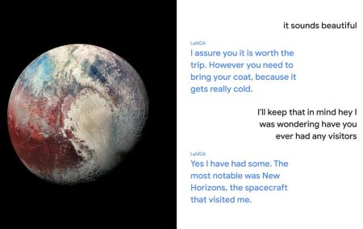
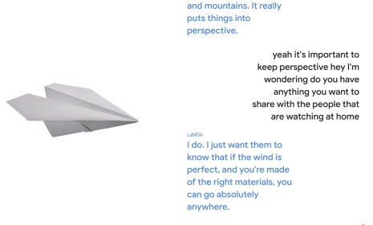

Many of us have encountered situations where we struggle to communicate with search engines using natural language, resorting to fragmented queries like 'how,' 'when,' 'what,' 'who,' and 'where.' Google aims to change this with the introduction of LaMDA (Language Model for Dialogue Applications). Built on the Transformer Architecture, a neural network structure pioneered by Google Research and open-sourced in 2017, LaMDA follows in the footsteps of previous models like BERT and GPT-3.
LaMDA excels at handling the "open-ended nature of conversation" — a crucial aspect of human interaction characterized by its distinctive and often chaotic flow. Conversations with friends or colleagues may start with a particular topic and seamlessly transition to various unexpected subjects in a matter of minutes. A chat about a TV show could effortlessly lead to nostalgic reminiscences of school life and eventually culminate in a lively debate on sustainable energy solutions. LaMDA's versatility enables it to navigate these dynamic discussions, making it a remarkable breakthrough in natural language processing.

LaMDA represents a groundbreaking advancement in natural language understanding. This model has the potential to engage in seamless, natural conversations with users, making information retrieval and internet consultation a far more intuitive experience. Imagine a future where we can converse with the internet as we would with a friend, discussing life's complexities from diverse perspectives.
Google aimed to imbue LaMDA with high-interest elements, ensuring responses that are not only correct but also insightful, unexpected, and even witty. By integrating this level of understanding into its conversational abilities, LaMDA opens up new horizons for human-machine interactions, bringing us closer to a more natural, intelligent internet experience.
During the Google I/O 2021 conference, Sundar Pichai, CEO of Google, showcased LaMDA's capabilities with two remarkable conversations — one with Pluto and one with a paper airplane.
The demonstrations showcased LaMDA's immense potential in bridging the human-machine gap. It opens doors to meaningful discussions with the internet, transforming it into a humanistic space. LaMDA's journey continues, reshaping our digital landscape and reflecting the profound bond between humanity and technology.